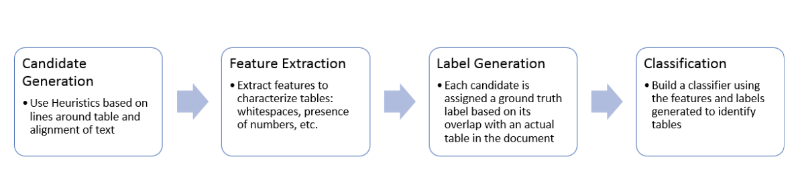
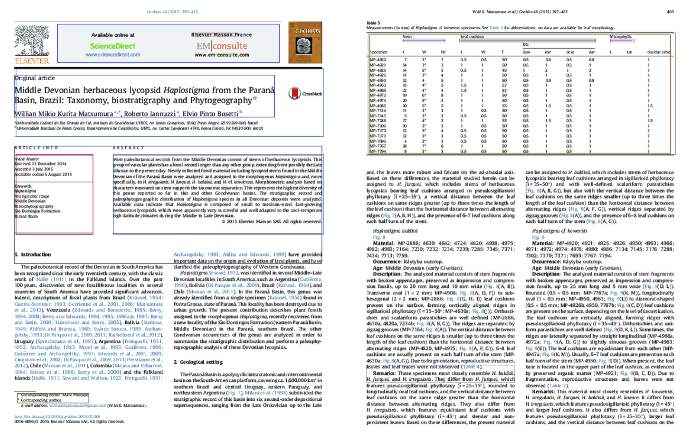
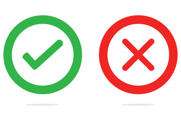
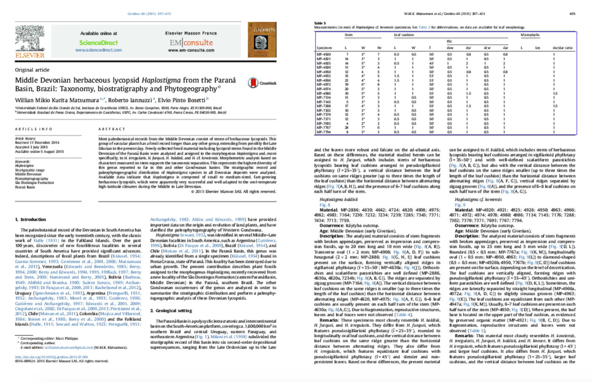

TabLoc: Machine Learning for Table Localization in PDF documents
Post by Ines Chami, Payal Bajaj, Stephen Bach and Chris Ré
TLDR; Table Detection is a crucial pre-processing step in information extraction from documents. We introduce TabLoc, a machine learning based table localization algorithm to identify table boundaries in digitized PDF documents. TabLoc is based on logistic regression and it outperforms the state of the art approaches in table detection and generalizes well to multiple kinds of documents.
Information extraction from data is becoming increasingly popular to convert data to a queryable form which can be leveraged for various purposes. For instance, extracting "Spouse" relations from natural language can be used to populate a knowledge base which can then further support downstream applications such as information retrieval and question answering. Snorkel is currently being used for information extraction from unstructured data, namely text.Text mining can however be a limiting approach since important knowledge and relational information can also be found in semi-structured data such as tables or figures.
Fonduer has been recently developed for information extraction from richly formatted data, where "information is conveyed via combinations of textual, structural, tabular, and visual expressions". A crucial step in relation extraction from tables is the localization of tables in PDF documents. Most of the state-of-the-art approaches for table detection rely on manually engineered heuristics which focus particular type of dataset, and cannot generalize well to other variations of tables. TabLoc is a robust machine learning approach for identifying bounding boxes of tables in digitized PDF documents which can then directly be fed into Fonduer for relation extraction from such tables. We walk through the different steps of the TabLoc in this blog post.
The source code is available here and we also provide a demo tutorial.
Tables can vary greatly from one document to another. For instance, tables can be horizontal or vertical, tables may or may not be bounded by vertical and horizontal lines, tables can span multiple pages, tables may or may not have captions, tables can contain text or numbers, etc. We present below some examples of tables found in PDF documents.
Previous methods are based on heuristic rules to detect tables[4]. For instance, some methods rely on the caption "table" to reduce the search area to the one around the word "table" [3]. Other methods rely on the presence of lines to detect tables. However, these heuristic based approaches would only work for the type of tables they were built for and thus do not generalize well to different kinds of documents. However for information extraction, it is crucial to have a system in place that is able to localize tables in varied documents.
TabLoc is a robust machine learning algorithm that can detect tables in digitized PDF documents and that generalizes easily to different kinds of tables. It doesn't depend on heuristics such as the presence of caption with the word "table", the presence of line boundaries around or in the table or any restriction on amount and type of content in the table.
TabLoc is unique TabLoc can be broken down into four units:

Tabloc begins by generating candidate regions that are likely to contain tables. We use PDFminer, a parsing library that can that extracts lines and words coordinates in PDF documents, to analyze alignments of text and position of lines and then return tables candidates as tuples of 5 numbers (page number, top, left, bottom, right).
The candidate generation is essentially based on two structural properties often found in tables: structural alignment of text and presence of lines in tables.
Alignments: Text within tables is often aligned, that is the elements within a table are often centered around the same vertical (or horizontal) axis within a column (or row). TabLoc qualifies objects with this property as vertically or horizontally aligned and uses structural alignments of text in PDF documents to generate tables candidates. Then it extracts the bounding boxes of each word in the document and performs hierarchical clustering by first combining text aligned in adjacent rows to obtain columns of the table, followed by combining these columns to create table candidates. This iterative clustering strategy allows TabLoc to generate multiple candidates, with various sizes as shown below.
Lines: TabLoc uses the presence of vertical or horizontal lines in tables to generate additional candidates. It first merges small segments that are next to each other and add additional lines to create bounding boxes. For instance, if two lines are vertically aligned, the vertical lines at the edges are added to create a bounding box. It then iterates over all lines coordinates in order to find pairs of horizontal and vertical lines that share the same (top, left) coordinates and return the corresponding bounding box as a table candidate. In the figure below, we show an example of how TabLoc generates candidates based on lines coordinates.


number of lines within a candidate region
proportion of digits in text within a region
average white spacing between words
number of columns, rows that are aligned
text area coverage (area covered by text / region area)
... and many others!
It is always hard to reduce a retrieval problem to a simple classification task. In our setting, our goal is to retrieve tables regions but we need ground truth labels to classify the candidates that we generated. In order to generate these ground truth labels, TabLoc compares each candidate with all ground truth tables. Note that this requires us to have ground truth table annotations for documents in the training set. It computes the intersection over union of bounding box area of a candidate with all ground truth tables and when the maximum IoU is greater than some preset threshold, the candidate is labeled as a true table region.
A logistic regression classifier is then trained using the ground truth labels to predict whether a candidate region is a table or not. During test time, TabLoc allows user to simply reuse the pretrained model to extract tables for any test PDF! We display below the final results for the previous candidate generation examples. We can see that TabLoc removed the false positive in the first page and kept one correct table candidate in the second page.

We first present the results of TabLoc on the ICDAR competition dataset. Nurimnen's algorithm performed best in this competition and as we can see, it outperforms our candidates but the differencce is not too large.
| Algorithm | Precision | Recall | F1 score |
|---|---|---|---|
| Nurimen's Algorithm[1] | 91.3 | 77.1 | 83.6 |
| OCR (Tesseract)[2] | 58.8 | 53.1 | 55.8 |
| Lines Candidates | 87.7 | 53.5 | 66.5 |
| Alignment Candidates | 84.23 | 75.15 | 79.43 |
We present the results of table localization by TabLoc on 166 Paleontology research papers. The state-of-the-art approach for table detection is Nurimnen's algorithm[1] which performed best in the ICDAR table detection competition in 2013. Tabloc outperforms this approach significantly as shown in the table below. This is because the former is built to work well on the documents in the ICDAR table detection competition and thus doesn't generalize well to other documents. Further, TabLoc also provides better results than Tesseract based OCR based approach[2]. This is because TabLoc is a learning algorithm as opposed to others which just rely on heuristics. Thus it is able to generalize better to table variations and varied documents.
| Algorithm | Precision | Recall | F1 score |
|---|---|---|---|
| Nurimnen's Algorithm[1] | 50.3 | 22.7 | 31.3 |
| OCR (Tesseract)[2] | 75.0 | 67.2 | 70.9 |
| Lines Candidates | 88.8 | 37.2 | 52.4 |
| Alignment Candidates | 92.7 | 44.6 | 60.3 |
| Lines+Alignment Candidates | 82.4 | 75.1 | 73.9 |
| TabLoc | 81.4 | 81.0 | 81.2 |
Label generation using weak supervision: Collecting training data for table detection is hard. We build an annotation that allows us to render pdf pages and manually crop table regions. We use these regions to generate labels for our candidates. However, this can be very time consuming for more than hundreds of documents. We are currently working towards a weak supervision approach, namely use our current small model to generate more training examples and use this noisy data to train larger models.
Visual Features: Tables are not only structurally but also visually differentiable from other parts of a document. We are working towards a computer vision approach that would allow us to also extract and add visual features into the loop.
Tree Structure: Our ultimate goal is the construction of a hierarchical tree of context objects such as text blocks, figures, tables, etc. This will allow us to build an end to end information extraction system that parses digitized PDFs to understand the underlying tree structure and then performs information extraction on it.
TODO: Replace background image